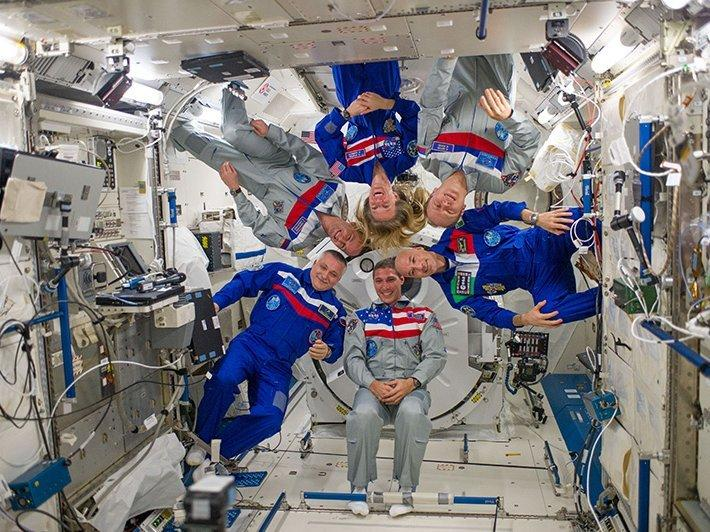

Launch Your Future as an Astronaut
Train for space missions and explore beyond Earth!
Pathway Snapshot
High School Courses | College Majors | Career Roles |
Physics | Aerospace Engineering | Astronaut (Mission Specialist or Pilot) |
Advanced Math (Pre-Calculus, Calculus) | Mechanical Engineering | Aerospace Engineer |
Computer Science / Coding | Electrical Engineering | Flight Test Engineer |
Chemistry | Computer Science | Space Systems Engineer |
Biology | Physics | Research Scientist |
Engineering & Robotics | Astrophysics / Astronomy | Robotics Specialist |
Astronomy / Space Science (if available) | Mathematics | Human Spaceflight Researcher |
Women Who Lead the Way
Jessica Watkins
NASA Astronaut & Geologist

Photo Credit: NASA / Johnson Space Center
“Representation matters. When people see themselves in these roles, it opens doors they might not have known were possible.”
Jessica Watkins made history as the first Black woman to live and work aboard the International Space Station. A trained geologist, she conducts cutting-edge space science and Earth research in microgravity—showing how STEM skills can take you from studying rocks on Earth to advancing science in orbit.
Day in the Life
Daily Tasks | Tools & Technologies |
Conduct scientific experiments in microgravity | Spacecraft and mission simulators |
Train for missions on Earth and in space | VR training systems |
Operate spacecraft systems and robotic arms | Robotics controls (e.g., robotic arms) |
Monitor health, safety, and mission data | Wearable biomedical sensors |
Work with international teams in real time | Communication systems & data links |
Analyze experiment results and share findings | Data analysis and research software |
Maintain and repair equipment | Engineering tools & diagnostics systems |
Mini-Activity: Try This!
Mission Design Challenge
- Design a one-day space mission to the Moon or Mars
- Decide:
- Mission goal (science, exploration, repair, research)
- Crew roles (pilot, engineer, scientist)
- Tools or tech needed
- Sketch your spacecraft or mission patch
- Bonus: Pitch your mission in 30 seconds like a real astronaut briefing
Careers & Resources
Degree Program Finder
- NASA Pathways & Astronaut Requirements
- University aerospace & engineering program directories
Scholarships
- Women in Aerospace Foundation Scholarships
- Society of Women Engineers (SWE) Scholarships
- STEM scholarships through colleges & state programs
Summer Camps & Programs
- NASA STEM Camps & Internships
- Space Camp (Huntsville, AL)
- University pre-engineering or robotics camps
Explore More
- O*NET Online – Astronaut Career Profile
- Roadtrip Nation – STEM & Space Career Stories
- NASA Artemis Program pages
You Belong Here
If you love science, problem-solving, adventure, and exploring the unknown, becoming an astronaut might be your future.
You don’t have to choose between brains and bravery, science and adventure, or leadership and learning—as an astronaut, you use all of it to push humanity forward.
